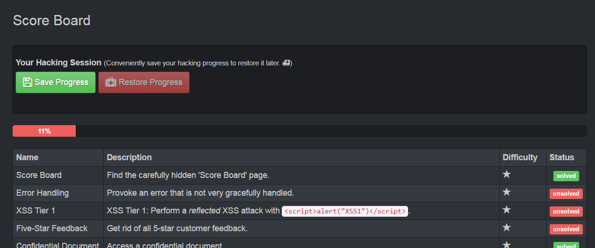
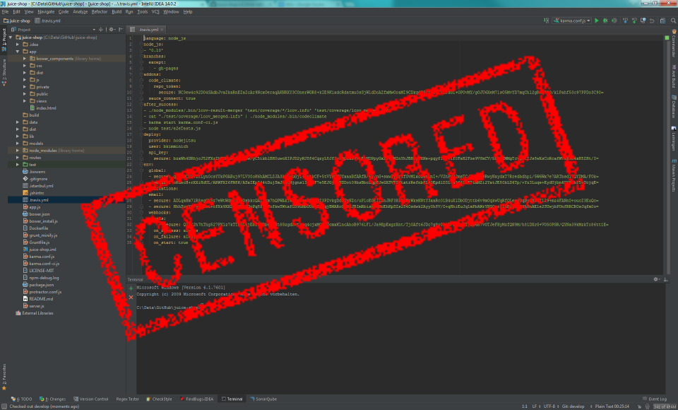
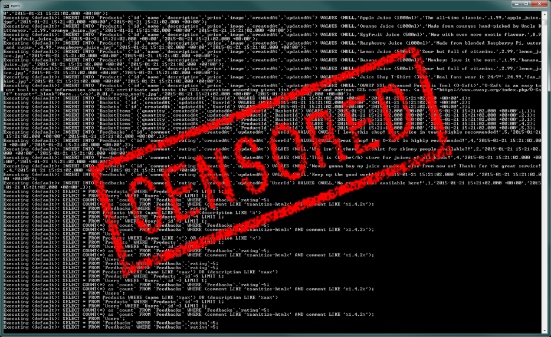
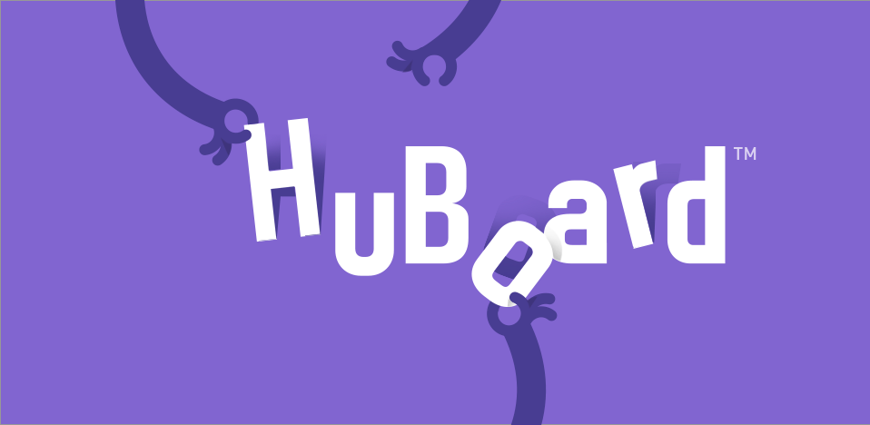

OWASP Juice Shop
Eine absichtlich unsichere Javascript Webanwendung
«Der vertrauenswürdigste Webshop da draußen»(@dschadow)
https://www.owasp.org/index.php/OWASP_Juice_Shop_Project
Präsentation von Björn Kimminich / @bkimminich
Warum "Juice Shop"?!?
"Juice Shop" ist eine wörtliche Übersetzung des deutschen Wortes "Saftladen", da der Beispielshop Saft verkauft (und nicht besonders nützlich ist).
Die Übereinstimmung der Initialen "JS" mit denen von "Javascript" ist rein zufällig!
Warum noch eine verwundbare Webanwendung?!?
OWASP Juice Shop ist die erste, im OWASP VWA Directory gelistete Anwendung, die vollständig in Javascript geschrieben ist.
Es scheint auch die erste verwundbare Anwendung zu sein, die die momentan populäre Architektur eines SPA/RIA Frontends mit einem RESTful Backend implementiert.

Technologie
Javascript von der UI bis zur REST API

Test Pyramide
Maximierung der Testautomation & Code Coverage


Build Prozess
Automatisierte Continuous Integration & Demo Deployment


Einfache Installation
Ausführbar in der Cloud, lokal und als Container


Unterstützung mehrerer Sprachen
Vollständige Übersetzung der UI in 15 Sprachen


38 Hacking Herausforderungen
Abdeckung verschiedenster Verwundbarkeiten und schwerer Designfehler

OWASP Juice Shop deckt alle Verwundbarkeiten der aktuellen OWASP Top 10 und einige mehr ab.
Schwierigkeit der Verwundbarkeiten
Enthält einfache Schnäppchen und harte Nüsse


Direkter Weg zum Sieg
Einige Herausforderungen lassen sich tatsächlich so lösen
Aufklärung zahlt sich aus
Die meisten Herausforderungen lassen sich einfacher mit etwas Forschungsarbeit lösen
Herausforderungen mit mehrstufigen Angriffen
Die schwersten Herausforderungen erfordern mehrere Vorbereitungsschritte
Score Board
Der Fortschritt beim Lösen der Herausforderungen wird auf Serverseite festgehalten

Unmittelbare Rückmeldung
Gelöste Herausforderungen werden als Push-Notifications verkündet

Deine Hacking-Session
Der eigene Fortschritt kann bequem gespeichert und wiederhergestellt werden
CTF Erweiterung
Verwenden sie juice-shop-ctf-cli um einen Event auf CTFd zu organisieren.

FAQ
Wenn FAQ & README nicht weiterhelfen, frag im Chat oder öffne ein Ticket
- Kann ich meine Pentesting Werkzeuge verwenden?
- Kann ich einen 'white box' Pentest durchführen?
- Kann ich in das Log des Servers schauen?
- Kann ich das Internet verwenden?
- Die Installation funktioniert nicht!
- Was, wenn ich den Server zum Absturz bringe?
- Ich komme bei der Herausforderung nicht weiter!
- Ich habe eine andere Verwundbarkeit entdeckt!
- Kann man anderweitig beitragen?
- Gibt es eine Belohnung für Beiträge?
Kann ich meine Pentesting Werkzeuge verwenden?
Ja, absolut! Verwende die Werkzeuge, die du am besten magst!

Proxies wie ZAP oder Burp können nützlich sein, aber die meisten automatischen Scanner werden nicht viel helfen.
Kann ich einen 'white box' Pentest durchführen?
Nein! Der Code der Anwendung würde alle Lösungen verraten!
Kann ich in das Log des Servers schauen?
Nein! Die Ausgabe auf der Konsole würde einige Lösungen verraten!
Kann ich das Internet verwenden?
Ja! Fühl dich frei überall nach Idden & Tips zu suchen, ...
...ausser im GitHub repository und den logs der Travis-CI build jobs!
Die Installation funktioniert nicht!
Bitte folge sorgfältig den Anweisungen im README
Wenn die Setup & Troubleshooting Dokumentation nicht hilft, kannst du versuchen Hilfe im Chat zu finden oder ein Ticket öffnen.
Was, wenn ich den Server zum Absturz bringe?
Die Anwendung wird bei jedem Start auf den Ausgangszustand zurückgesetzt

Der Fortschritt im Scoreboard wird ebenfalls zurückgesetzt! Sichere deine Fortschritte regelmäßig!
Ich komme bei der Herausforderung nicht weiter!
Hilfreiche Hinweise finden sich im offiziellen JuiceShop Kompendium eBook

Alternativ kann man nach Tips im community Chat fragen.
Ich habe eine andere Verwundbarkeit entdeckt!
Bitte melde nicht-getrackte Verwundbarkeiten als Ticket

Natürlich kannst du auch direkt beitragen, indem du einen Pull Request öffnest. Bitte brich keine Tests.
Kann man anderweitig beitragen?
Gut, dass du fragst! Du kannst helfen, indem du neue Features oder Bugfixes implementierst*. Du kannst auch helfen, die Anwendung in weitere Sprachen zu übersetzen!

*Besonders diejenigen, die mit "help wanted" markiert sind!
Gibt es eine Belohnung für Beiträge?
Für den ersten akzeptierten Pull Request erhälst du einige offizielle Juice Shop Aufkleber umsonst!


Für Mitglieder des Kernteams gibt es sogar T-Shirts, Becher und andere großartige Artikel!
Roadmap
- Veröffentlichung eines Challenge Pack für noch mehr Abwechslung
- Aktualisierung verwendeter Technologien (Angular, Sequelize, Jasmine/Frisby)
- Lab Project Status bei OWASP (Projekt-Review läuft)

Wann? Wenn es fertig ist!
Zusätzliche Informationen
| Offizielle Seite | https://www.owasp.org/index.php/OWASP_Juice_Shop_Project |
| Sourcecode | https://github.com/bkimminich/juice-shop |
Björn's Material zu Web Application Security
| Web Application Security in a Nutshell | http://webappsec-nutshell.kimminich.de |
| Web Application Security Introduction | http://slideshare.net/BjrnKimminich/web-application-security-introduction |
| Web Application Security Training Workshop | http://slideshare.net/BjrnKimminich/web-application-security-21684264 |
Copyright (c) 2014-2017 Björn Kimminich
Licensed under the MIT license.
Created with reveal.js - The HTML Presentation Framework